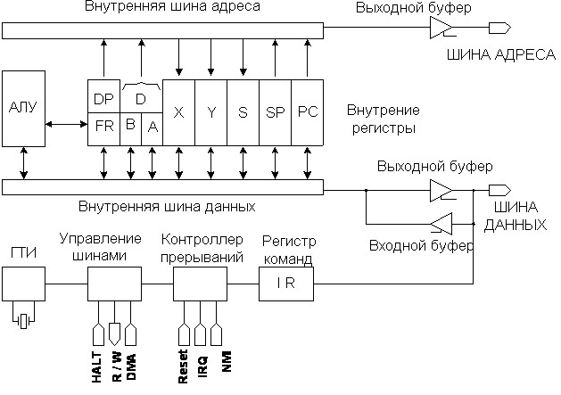
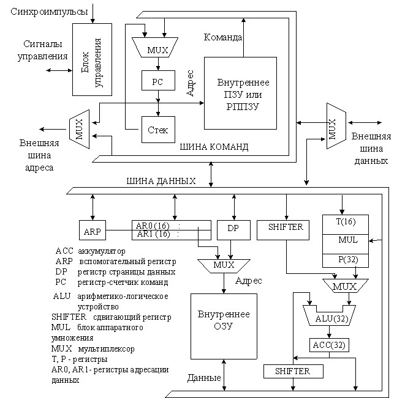
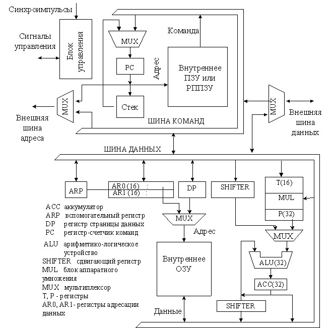
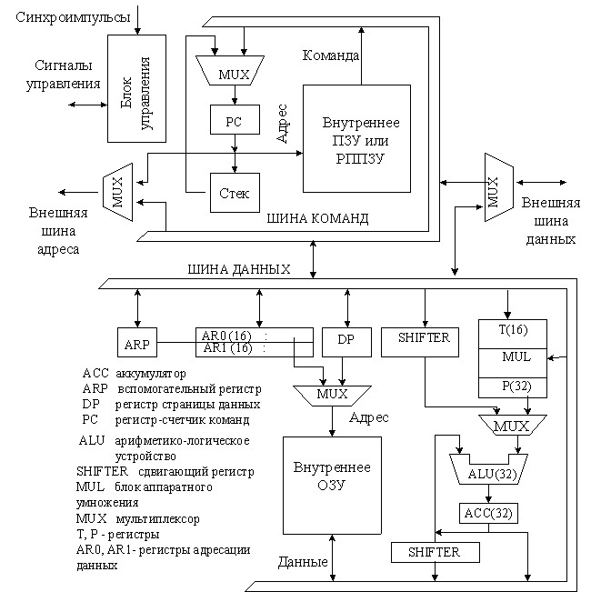

 


Типовая структура
Микроконтроллер
Обработка сигналов
Универсальные микропроцессоры ориентированы на использование в различных вычислительных, информационных и управляющих системах, в которых требуется обработка больших объемов информации (например, для цифровой обработки изображений, управления базами данных, визуализации данных оператору или экипажу), но нет специальных требований к архитектуре вычислителя, большому количеству средств УСО, габаритным размерам и энергопотреблению. Универсальность микропроцессора подразумевает как широкую сферу использования, так и типовую структуру вычислительной системы. Для таких устройств обычно реализуется архитектура Фон Неймана, и реже Гарвардская архитектура. Номенклатура современных микропроцессорных средств отличается огромным разнообразием функциональных возможностей и сфер использования. Однако в этом разнообразии можно выделить несколько функциональных групп и некоторые общие принципы логического построения и функционирования. МК для задач логического управления - логические процессоры- имеют специальные аппаратные расширения (память с битовой адресацией, порты с индивидуальной настройкой каждой линии) и расширенный набор команд логической обработки данных. В современных разработках широкое применение нашли МК серии К1816 (аналог Intel MCS-51), а также AVR - и PIC-контроллеры. Существуют также многочисленные расширения стандартного MCS-51 – с повышенным быстродействием, увеличенными объемами памяти и набором функций.
Основные составляющие микропроцессора: арифметико-логическое устройство (АЛУ), регистры данных и устройство управления. АЛУ выполняет арифметические и логические операции над данными. Регистры данных, обычно их шесть, являются внутренней памятью, каждый способен хранить одно слово. Для передачи данных между блоками микропроцессора используется внутренняя шина данных.